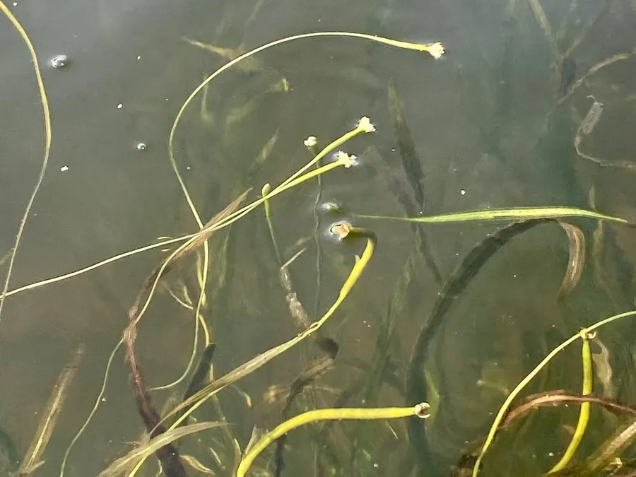

水生植物 · 植物界
大水兰 Vallisneria americana

水鳖科多年生沉水草本，叶片带状长达一米、随水飘动，原产北美东部，是水族箱与湖泊中高效的净水植物。
- 分类
- 门被子植物门纲木兰纲目泽泻目科水鳖科属苦草属
- 栖息环境
- 河流、湖泊、河口与池塘的浅水至中水区，喜光、耐轻度盐碱
- 地理分布
- 原产北美东部与中美洲，中国及世界各地水族与生态工程引种
- 保护级别
- 暂无评估；在北美部分州因栖息地退化而局部减少
物种志
大水兰为水鳖科苦草属多年生沉水草本，具白色匍匐根状茎。叶基生，带状，长 30–100 厘米，宽 0.5–1.5 厘米，边缘有细齿，深绿色，常呈螺旋状扭曲。雌雄异株，雄花极小，成熟后脱离花葶浮于水面开放；雌花花葶螺旋状卷曲，受精后螺旋收紧将果实拖入水底，花期 7–9 月。
大水兰原产北美洲东部与中美洲的河流、湖泊和河口，适宜水深 30–100 厘米，喜光、耐一定盐度，对水质适应力强。它的带状叶丛随水流摆动，是大型水族箱和池塘背景的经典水草，也是湖泊生态修复中重要的沉水植被，能吸收氮磷、稳定底质、为鱼虾提供栖息地。栽培以匍匐茎分株繁殖，需深厚底砂与中强光；叶片过长时可修剪，但应避免剪伤生长点。
形态与习性
- 株高叶长 30–100 厘米，宽 0.5–1.5 厘米
- 水深适宜水深 30–100 厘米，可更深
- 水质适应软水至微咸水，pH 6.5–8.0
- 光照中强光，光足时叶色浓绿、生长快
- 生态功能吸收氮磷、稳定底质、提供鱼虾栖息
- 繁殖匍匐茎分株，也可播种
趣味知识
- 大水兰的雌花花葶呈螺旋状，受精后会像弹簧一样收紧，把果实拖回水底成熟。
- 它的叶片边缘有细齿，用手顺着叶缘摸能感到明显粗糙。
- 在北美，大片大水兰是鲈鱼与太阳鱼的产卵场，也是水鸟的食物。
- 它耐轻度盐碱，能生长在河口半咸水中，是少见的耐盐沉水植物。